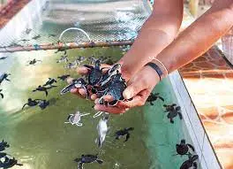
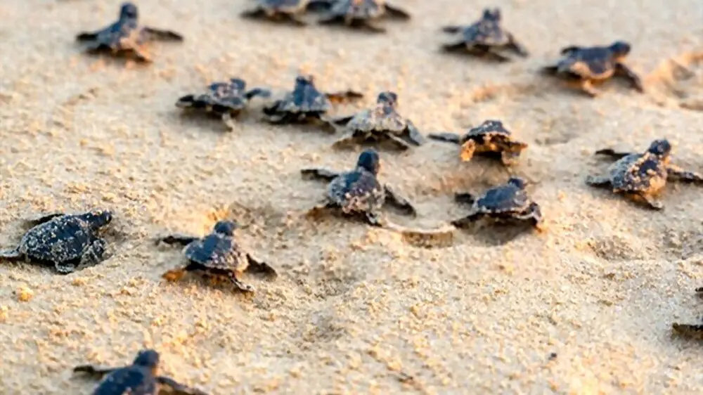

The Bentota Turtle Hatchery, located in the coastal town of Bentota in Sri Lanka, is a significant conservation project dedicated to the protection and preservation of sea turtles. The hatchery focuses on various aspects of turtle conservation, including nesting site management, egg incubation, hatching, and the release of hatchlings into the ocean. It serves as an educational center, providing valuable insights into the life cycle of sea turtles and the importance of their conservation.


At the Bentota Turtle Hatchery, trained staff and volunteers work diligently to ensure the well-being of sea turtles. The hatchery collects turtle eggs from vulnerable nesting sites along the Sri Lankan coast and places them in protected hatcheries for incubation. Once the hatchlings emerge, they are carefully nurtured and kept in tanks until they are strong enough to be released into the sea. Additionally, the hatchery conducts research on sea turtle behavior and nesting patterns, contributing to scientific knowledge and conservation efforts. The Bentota Turtle Hatchery also plays an active role in educating visitors about the threats faced by sea turtles and the importance of conservation, fostering a sense of environmental responsibility among tourists and the local community.
Overall, the Bentota Turtle Hatchery serves as a vital sanctuary for sea turtles, providing a safe environment for nesting, hatching, and the protection of these remarkable creatures. Through its conservation initiatives and educational programs, the hatchery raises awareness about the importance of preserving sea turtles and inspires visitors to take part in their conservation.
Nesting Site Management and Conservation:
Nesting Site Identification and Protection:
Detailing the methods used to identify and mark nesting sites along the coast, including monitoring and patrolling to prevent disturbances and illegal activities.
Nest Excavation and Egg Collection:
Explaining the careful process of excavating nests, collecting eggs, and transferring them to protected hatcheries within the hatchery premises.
Egg Incubation Techniques:
Describing the incubation process, temperature control, and other factors considered to maximize the chances of successful hatching and ensure the survival of hatchlings.
Nesting Site Rehabilitation:
Discussing any habitat restoration initiatives undertaken by the hatchery to improve nesting site conditions and create suitable environments for future nesting seasons.
Educational Programs and Community Outreach:
Visitor Education and Guided Tours:
Exploring the educational programs offered at the hatchery, including guided tours that provide insights into sea turtle biology, conservation challenges, and the hatchery's work. Highlighting the hatchery's efforts to inform and inspire visitors about the importance of sea turtle conservation.
School and Community Engagement:
Discussing the hatchery's initiatives to collaborate with local schools and communities, such as organizing awareness workshops, conducting educational programs for children, and involving the community in conservation activities..
Awareness Campaigns:
Detailing the outreach efforts of the hatchery, including awareness campaigns in the local community and involvement in regional conservation events to promote sea turtle conservation and sustainability.
Sustainable Practices:
Exploring the hatchery's commitment to sustainable practices, such as waste management, energy conservation, and responsible tourism, as part of their educational messaging and community engagement.